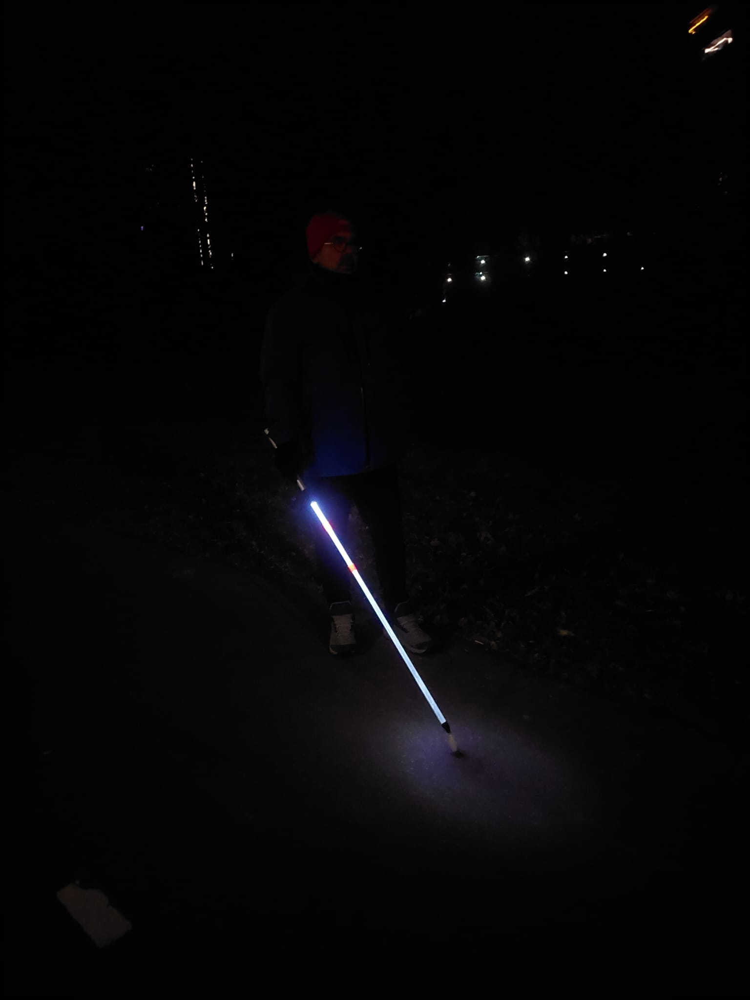

Wat is LumiCane?
LumiCane is een innovatieve lichtgevende blindenstok die speciaal is ontwikkeld voor blinden en slechtzienden.
Het doel van het product is simpel maar krachtig: “Mensen met een visuele beperking beter zichtbaar én herkenbaar maken in het donker of bij slechte weeromstandigheden.
Het onstaan van LumiCane.
Uit interviews blijkt dat het idee meer dan 10 jaar geleden, na een bezoek aan het lichtfestival Glow Eindhoven is ontstaan.
Peter Meuleman is zwaar slechtziend. Hij voelde zich 's avonds onveilig met een normale witte stok.
Andere weggebruikers zagen hem vaak te laat.
Samen met zijn zoon, Thijmen Meuleman, ontstond het idee voor de LumiCane.
Samenwerking met Videlio.
Videlio helpt mee aan de ontwikkeling van de LumiCane.
Videlio is betrokken bij het prototypen, technische- en productontwikkeling en de innovatiebegeleiding.
Het probleem dat LumiCane oplost.
De standaard witte stok is overdag herkenbaar, maar in het donker nauwelijks tot niet zichtbaar.
Dit brengt risico's met zich mee.
Weggebruikers zien de stokken niet of nauwelijks, waardoor ze de persoon ook niet of te laat zien.
Gebruikers voelen zich onveilig en vermijden donkere situaties.
De LumiCane wil dat oplossen door de stok zelf licht te laten geven, zonder extra ingewikkelde technologieën toe te voegen en de herkenbaarheid van de witte stok te behouden.
Waarom LumiCane anders is dan andere “smart canes”
Veel bestaande “smart cane”-producten focussen zich op ultrasone sensoren, AI, GPS, Obstacle detection, Apps, Camera's en meer.
Maar LumiCane kiest bewust voor eenvoud.
Volgens Thijmen:
“Gebruikers willen vaak helemaal geen complexe functies. Ze willen gewoon veilig en zichtbaar zijn.”
